跨街景重复的要素关系
从每个方向的28×28 patch 激活中提取区域，利用 Qwen 细标签的类型与部件关系整理要素，再在完整四方向全景中检索跨城重复的布局。
01 · 四方向输入
0°、90°、180°、270°同属一个全景，真实朝向和完整图像在实例中保留。
02 · 局部 SAE 要素
复用当前 ViT-L W4096/K32 逐 patch 激活，在方向图中产生非矩形区域遮罩。Qwen 细标签只作待复核的语义归组，部件归回所属对象。
03 · 重复关系检索
每个候选包含三个局部 SAE 要素，可跨越四个方向。同一建筑的窗户和墙面只算一个对象；两个相隔较远的乔木区域可作为待复核的双树候选。数量由训练样本支持决定。
04 · 留出样本核查
开发集比较训练候选与同城要素及布局置换对照；测试集封存。语义仍需人工复核。
当前实验如何找组合？
以完整四方向全景为统计单位；每张方向图独立形成要素区域，再用环形方位、上下相对位置和分离的 mask 建立关系。只有明确的标签关系进入结构约束搜索；同一对象的部件不重复计数，方向边界处的重复观测也被过滤。探索性样本先看跨城重复与置换对照。
标签结构约束的全景组成 · 探索性结果
复用 29 城、1,856 个四方向全景和原有 SAE 稀疏激活。从每个候选区域贡献最大的合格 SAE 维度读取 Qwen 细标签；只将标签结构中明确连接的标签用于本轮关系检索。is_a 保留类型差异，part_of 部件归回所属对象。建筑的窗户与墙面不会算成两个建筑要素；相隔足够远的两个树区域仍只是待复核的两棵树候选。
训练集提出 1,797 个三要素布局 key，开发集进行同城方向内的标签置换与全景内的布局置换；其中 1,547 个 key 的两种探索性 BH q 值均低于 0.05。本页展示 16 个组合及四方向遮罩实例。细标签组合的频数是描述统计，q 值仅适用于对应的宽类布局 key。
Qwen 标签和 SAE 遮罩尚未经过对象实例验证。候选跨城重复不意味着对象数量、语义或景观原型已经确认；测试集激活保持封存。实例中的箭头表示标签归并，不代表视觉识别出的对象边界。
核查标签上下级与并列结构 · 下载全部候选和实验协议 JSON
关系 01 · 建筑及附属部件 + 乔木及其部件 + 乔木及其部件
四方向相对布局：相对方向 / 高度相近；较宽间隔 / 高度相近；较宽间隔 / 高度相近。训练 222 全景 / 29 城；开发 71 全景 / 27 城。共现置换 q=0.012，布局置换 q=0.012。
重复的细标签组合
- 建筑 + 树木 + 树木：训练 170 / 开发 56 全景
- 建筑 + 树木 + 树林：训练 10 / 开发 3 全景
- 房屋 + 树木 + 树木：训练 10 / 开发 2 全景
- 建筑 + 松树 + 树木：训练 6 / 开发 1 全景
- 建筑 + 树木 + 棕榈树：训练 5 / 开发 3 全景
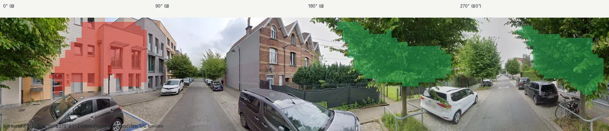
panoid: wX6vL4gKz3stQKeE724XkA
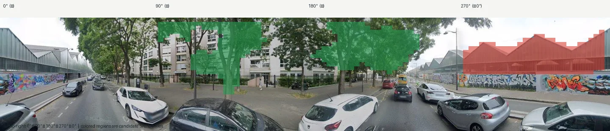
panoid: GmH8r-cXnHlF9vnEZA0BvA
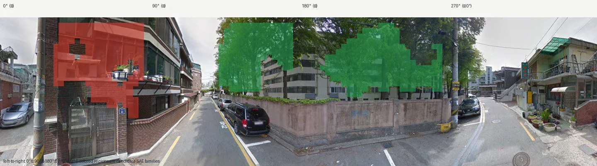
panoid: Bw1NdbWbpwQRdDYhz-sQAQ

panoid: hxmQU3Akf6Tvve6K_zNwdA
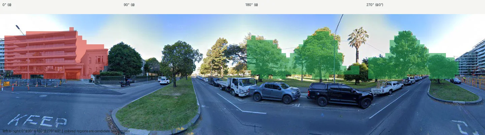
panoid: UKTitL1JBmBS54iCDykPBg
关系 02 · 围合与防护设施 + 道路及车行路面 + 市政杆线设施
四方向相对布局：较宽间隔 / 高度相近；较宽间隔 / 后者更高；近邻 / 后者更高。训练 59 全景 / 25 城；开发 24 全景 / 14 城。共现置换 q=0.012，布局置换 q=0.012。
重复的细标签组合
- 围栏 + 道路 + 路灯：训练 14 / 开发 6 全景
- 围栏 + 道路 + 电线杆：训练 14 / 开发 9 全景
- 护栏 + 道路 + 路灯：训练 7 / 开发 1 全景
- 围墙 + 道路 + 电线杆：训练 7 / 开发 1 全景
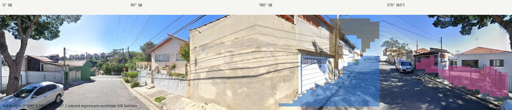
panoid: 86SzZLrTgRLvfCaKS7dC_Q
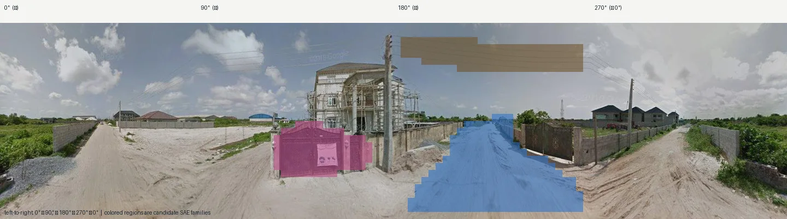
panoid: zuQcA-U_YMHo9u89efa0Ig
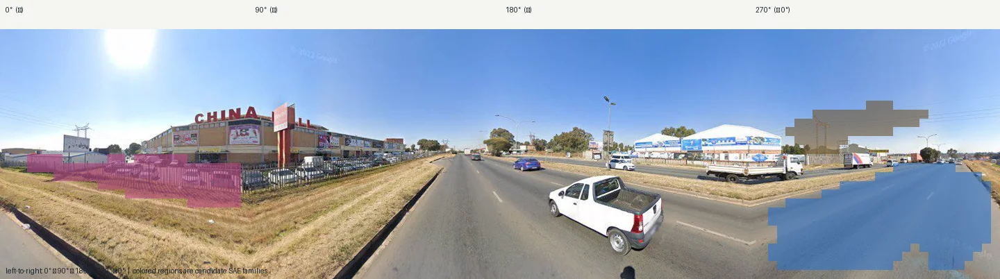
panoid: NtyUnF2feo6SUss6JZOLCA
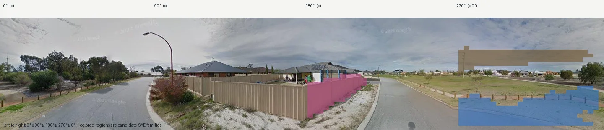
panoid: yS1TMDSy77t_8fhWceKiGw
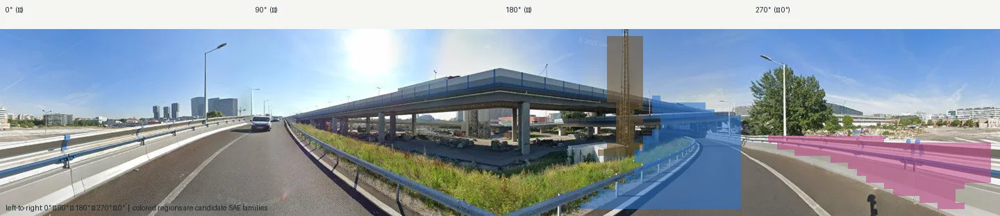
panoid: BaSBiW6zjWZP90Ro6k4nSA
关系 03 · 道路及车行路面 + 市政杆线设施 + 车辆及其部件
四方向相对布局：较宽间隔 / 后者更高；较宽间隔 / 高度相近；近邻 / 后者更低。训练 60 全景 / 19 城；开发 24 全景 / 14 城。共现置换 q=0.012，布局置换 q=0.012。
重复的细标签组合
- 道路 + 电线杆 + 车辆：训练 26 / 开发 12 全景
- 道路 + 路灯 + 车辆：训练 17 / 开发 6 全景
- 道路 + 电线杆 + 汽车：训练 4 / 开发 1 全景
- 道路 + 高压电线塔 + 车辆：训练 3 / 开发 2 全景
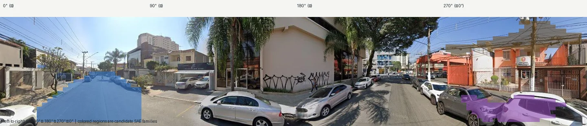
panoid: OOxTK4nkFn1UaFCkDx3jew
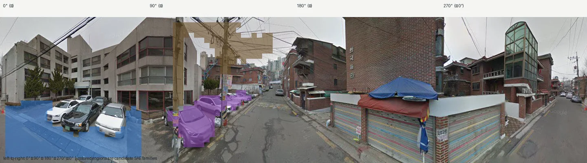
panoid: GzH21Q_UiGghu20hvChVKg
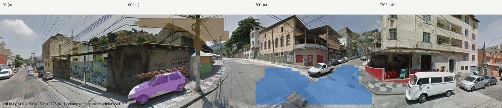
panoid: p5za8RY2C-FZObOLmZHa4g
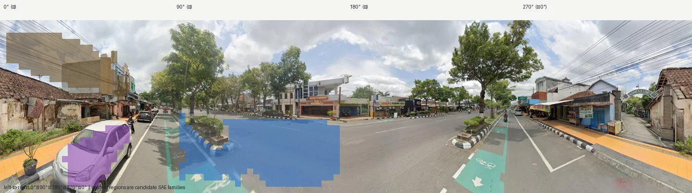
panoid: PwXNuJwrLInDhvp8pL_Xrw
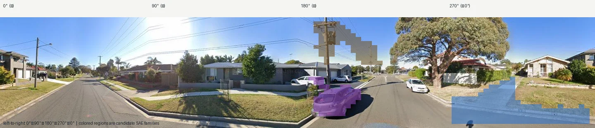
panoid: ZLRg2QMCwmpxJAu-qLhhaQ
关系 04 · 建筑及附属部件 + 道路及车行路面 + 标识与交通控制设施
四方向相对布局：较宽间隔 / 后者更低；近邻 / 高度相近；较宽间隔 / 后者更高。训练 45 全景 / 21 城；开发 19 全景 / 13 城。共现置换 q=0.012，布局置换 q=0.012。
重复的细标签组合
- 建筑 + 道路 + 广告牌：训练 33 / 开发 16 全景
- 建筑 + 道路 + 交通标志：训练 5 / 开发 1 全景
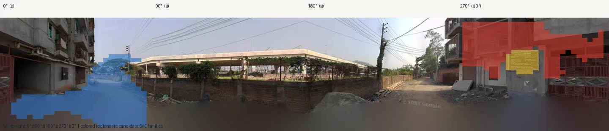
panoid: mR3thqm7AZOOOjs79sXEwA
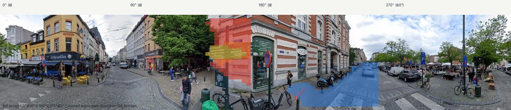
panoid: f-7DeLA1gtCP4qRdV35l-g
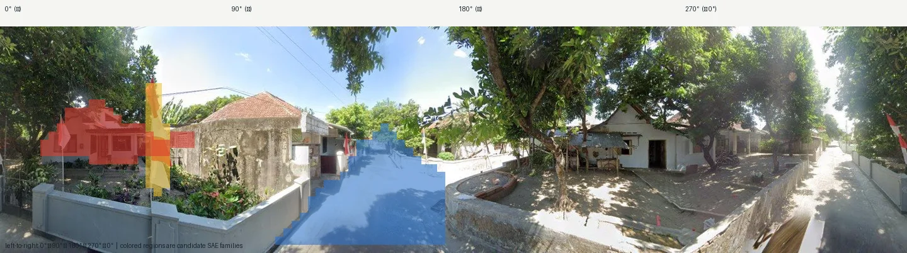
panoid: aTOnExBHVJtJ8b534TzgiA
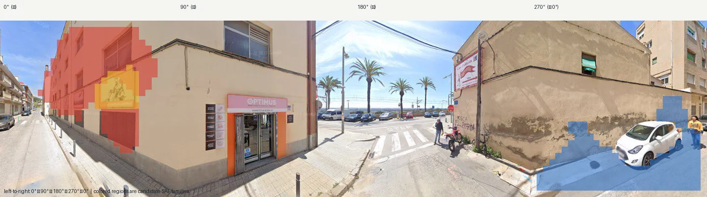
panoid: mSdJcR9CrHsqVRxI_8b_6A
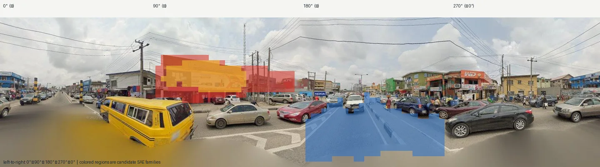
panoid: Iq9BPLnUvNJ4PUvpjaZJNA
关系 05 · 道路及车行路面 + transport_structure + 乔木及其部件
四方向相对布局：近邻 / 后者更高；较宽间隔 / 后者更高；较宽间隔 / 高度相近。训练 33 全景 / 22 城；开发 10 全景 / 9 城。共现置换 q=0.012，布局置换 q=0.012。
重复的细标签组合
- 道路 + 桥梁 + 树木：训练 21 / 开发 8 全景
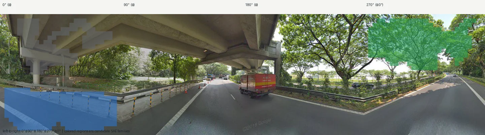
panoid: gTYfG6ibFcioTAPn0p8pgw
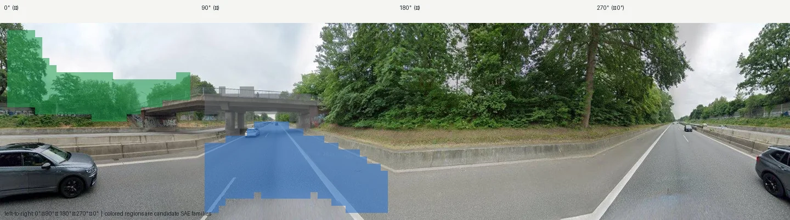
panoid: zUXABoitnsqeRmmsZBl4bg
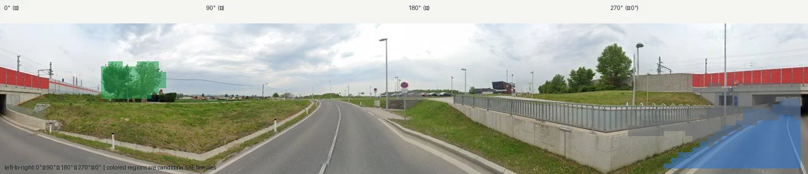
panoid: jYSbdd52HTVQIUuBQQXzkA
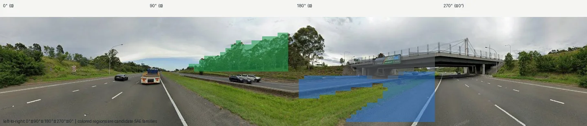
panoid: rzEjPy9ZN3nAaDsas529vg
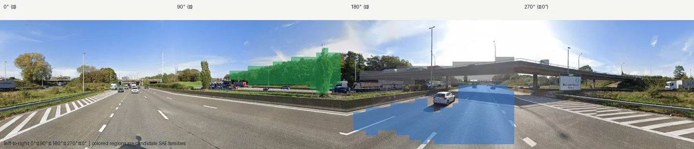
panoid: ZQWmIz89qItqUwQvkHge0Q
关系 06 · 围合与防护设施 + 建筑及附属部件 + 乔木及其部件
四方向相对布局：近邻 / 后者更高；相邻 / 后者更高；相邻 / 高度相近。训练 39 全景 / 21 城；开发 18 全景 / 15 城。共现置换 q=0.012，布局置换 q=0.012。
重复的细标签组合
- 围栏 + 建筑 + 树木：训练 19 / 开发 10 全景
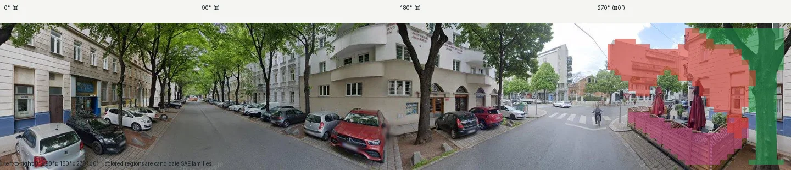
panoid: dvHuB28gW7iGd4W965iAtA
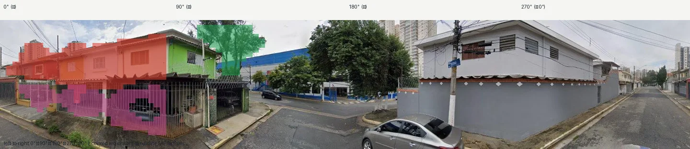
panoid: VWBkIsSa4Xa86qA-sYCZBg
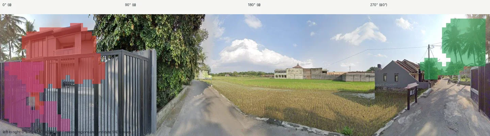
panoid: uKwDtdp4iOKRWJz_gon_9A
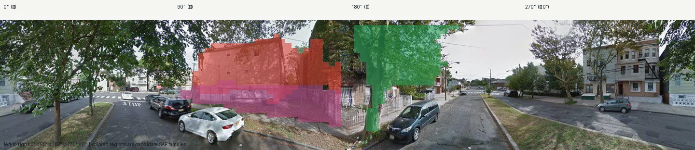
panoid: mWURFRXK3wJDKmx_qjdLpA
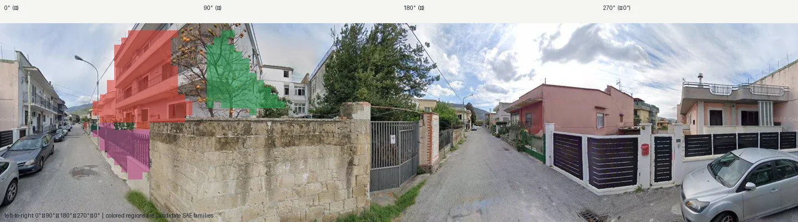
panoid: Dpys3qSFp8HJdYf4KQ_H7A
关系 07 · 围合与防护设施 + 道路及车行路面 + 车辆及其部件
四方向相对布局：较宽间隔 / 高度相近；很宽间隔 / 高度相近；相邻 / 高度相近。训练 40 全景 / 21 城；开发 19 全景 / 13 城。共现置换 q=0.012，布局置换 q=0.012。
重复的细标签组合
- 围栏 + 道路 + 车辆：训练 9 / 开发 9 全景
- 围墙 + 道路 + 车辆：训练 6 / 开发 1 全景
- 护栏 + 道路 + 车辆：训练 4 / 开发 2 全景
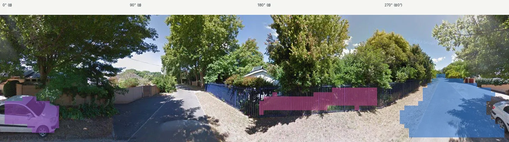
panoid: 6aABw68vbxQK_b88plqJ5g
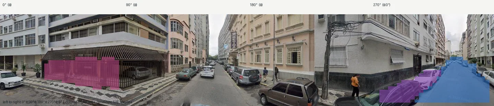
panoid: PdlxrovLaalmxvRQdmDn2A
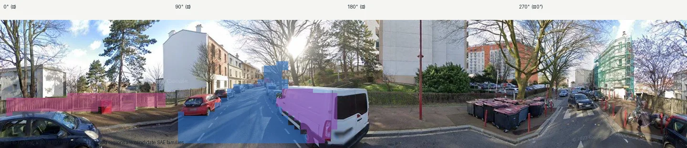
panoid: eh8aF4l3KUkNi5R1TN5ugg
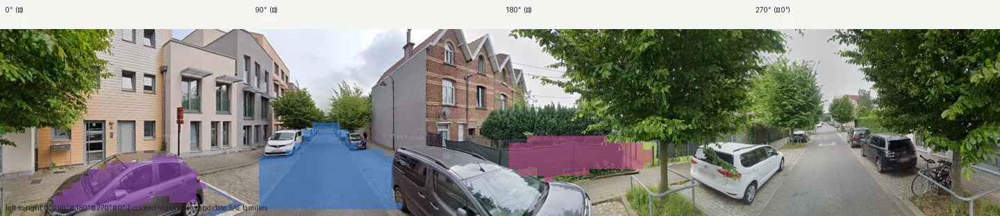
panoid: wX6vL4gKz3stQKeE724XkA
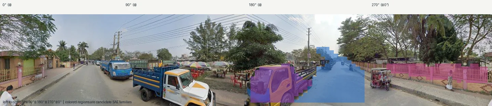
panoid: 5cc8ROVIEwaRofEcl7txfA
关系 08 · 建筑及附属部件 + 市政杆线设施 + 车辆及其部件
四方向相对布局：较宽间隔 / 高度相近；近邻 / 后者更低；较宽间隔 / 后者更低。训练 36 全景 / 18 城；开发 16 全景 / 11 城。共现置换 q=0.012，布局置换 q=0.012。
重复的细标签组合
- 建筑 + 电线杆 + 车辆：训练 16 / 开发 4 全景
- 建筑 + 路灯 + 车辆：训练 9 / 开发 7 全景
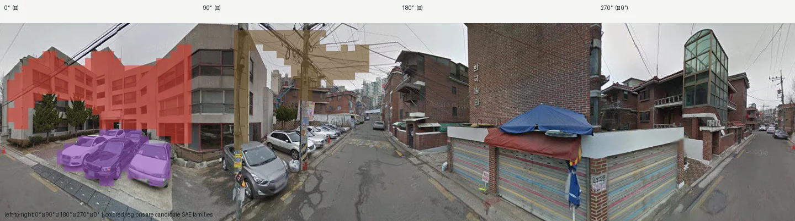
panoid: GzH21Q_UiGghu20hvChVKg
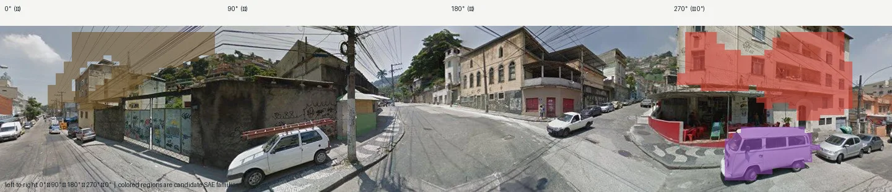
panoid: p5za8RY2C-FZObOLmZHa4g
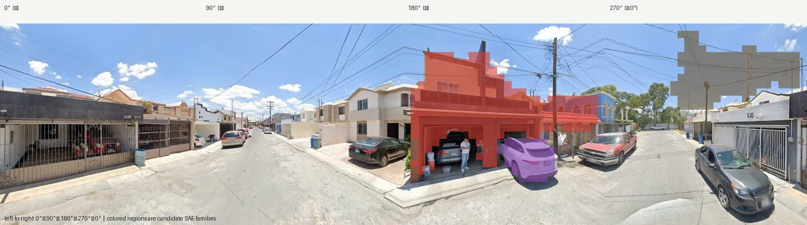
panoid: bH-oq8-vvCGI4eTyKNiHGQ
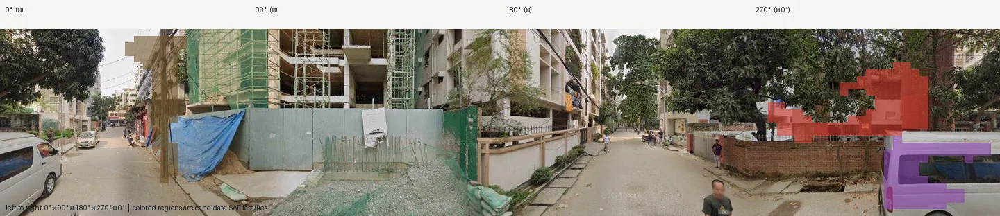
panoid: mkH0PTNuodaz4zZ_WtCXlg
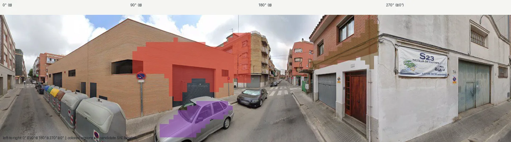
panoid: IjXVnm8cncQAaX6cSFs4rA
关系 09 · 乔木及其部件 + 市政杆线设施 + 车辆及其部件
四方向相对布局：较宽间隔 / 高度相近；较宽间隔 / 后者更低；近邻 / 后者更低。训练 26 全景 / 13 城；开发 12 全景 / 9 城。共现置换 q=0.012，布局置换 q=0.012。
重复的细标签组合
- 树木 + 路灯 + 车辆：训练 8 / 开发 3 全景
- 树木 + 电线杆 + 车辆：训练 7 / 开发 4 全景
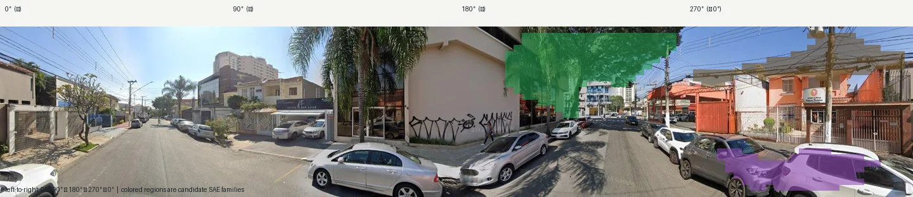
panoid: OOxTK4nkFn1UaFCkDx3jew
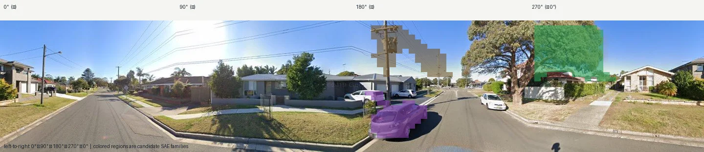
panoid: ZLRg2QMCwmpxJAu-qLhhaQ
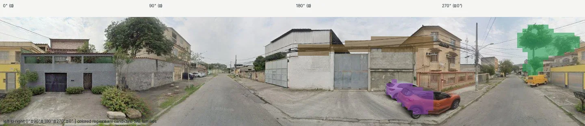
panoid: YCQ91eFGJzTzYm3t_8EYBQ
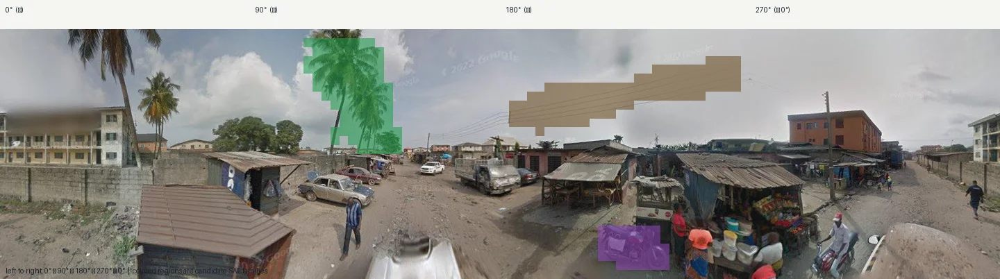
panoid: LtkSbV4dJdPOhxVIcfCLxw
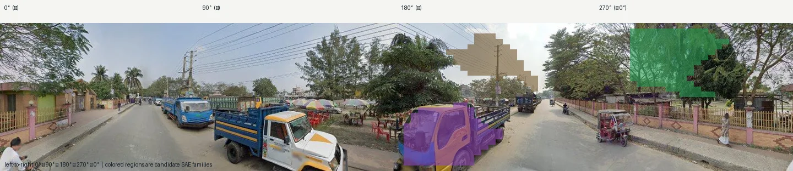
panoid: 5cc8ROVIEwaRofEcl7txfA
关系 10 · 围合与防护设施 + 建筑及附属部件 + 市政杆线设施
四方向相对布局：近邻 / 后者更高；较宽间隔 / 后者更高；较宽间隔 / 高度相近。训练 31 全景 / 15 城；开发 11 全景 / 9 城。共现置换 q=0.012，布局置换 q=0.012。
重复的细标签组合
- 围栏 + 建筑 + 路灯：训练 12 / 开发 6 全景
- 围栏 + 建筑 + 电线杆：训练 8 / 开发 2 全景
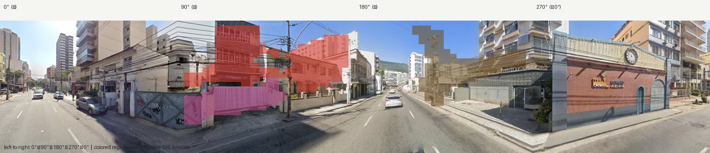
panoid: clcNcgYt7gskg-lTXGnDfA
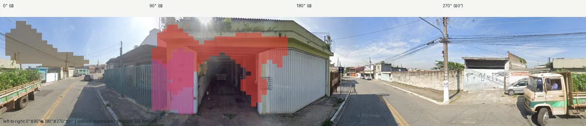
panoid: _UjSoP6cesdis0PvzuImEA
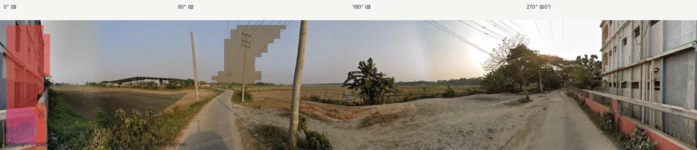
panoid: 70hK1w8CqZOwIX95EsUUjQ
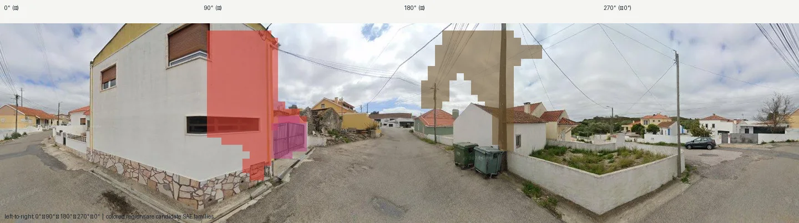
panoid: yGsn1aFIfi_FwDB5SOotYA
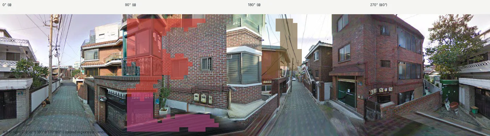
panoid: 3k3z8-4Ev3XAQi2SycWb6g
关系 11 · 围合与防护设施 + 建筑及附属部件 + 车辆及其部件
四方向相对布局：相对方向 / 后者更高；相对方向 / 高度相近；近邻 / 后者更低。训练 19 全景 / 14 城；开发 7 全景 / 6 城。共现置换 q=0.012，布局置换 q=0.012。
重复的细标签组合
- 围栏 + 建筑 + 车辆：训练 11 / 开发 3 全景
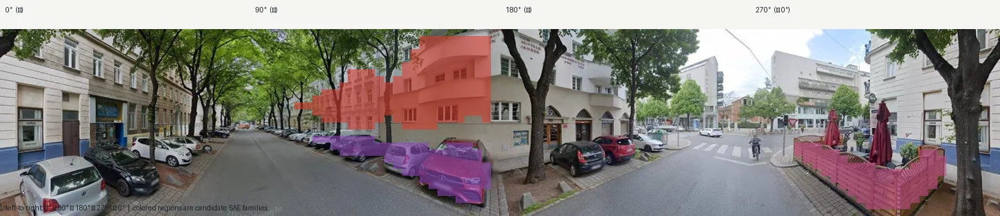
panoid: dvHuB28gW7iGd4W965iAtA
panoid: bH-oq8-vvCGI4eTyKNiHGQ
panoid: MYVcUSFmow0SisA7NRiFsg
panoid: Az1z_llT3cIVfAkHV-Xnog
panoid: 0o0RxAbUtLDEmT2MsHJeFQ
关系 12 · 围合与防护设施 + 草灌及低矮植被 + 市政杆线设施
四方向相对布局：相对方向 / 高度相近；较宽间隔 / 后者更高；较宽间隔 / 后者更高。训练 16 全景 / 11 城；开发 7 全景 / 6 城。共现置换 q=0.012，布局置换 q=0.012。
重复的细标签组合
- 围栏 + 草地 + 路灯：训练 3 / 开发 1 全景
panoid: BaSBiW6zjWZP90Ro6k4nSA
panoid: 70hK1w8CqZOwIX95EsUUjQ
panoid: ot2sDvf9dUFRDFOMhcP90Q
panoid: qcu7ZnVIBq3xQGbn4DCCEQ
panoid: yS1TMDSy77t_8fhWceKiGw
关系 13 · 道路及车行路面 + 乔木及其部件 + 车辆及其部件
四方向相对布局：较宽间隔 / 后者更高；很宽间隔 / 高度相近；相邻 / 后者更低。训练 147 全景 / 26 城；开发 62 全景 / 28 城。共现置换 q=0.012，布局置换 q=0.012。
重复的细标签组合
- 道路 + 树木 + 车辆：训练 106 / 开发 43 全景
- 道路 + 树木 + 白色货车：训练 12 / 开发 1 全景
- 道路 + 树木 + 汽车：训练 9 / 开发 4 全景
- 道路 + 树林 + 车辆：训练 5 / 开发 2 全景
panoid: qSu0SKdojUm8E1liGj-1mA
panoid: GmH8r-cXnHlF9vnEZA0BvA
panoid: xgoczVJN6-ytqxt6KIUwLw
panoid: dvHuB28gW7iGd4W965iAtA
panoid: 5cc8ROVIEwaRofEcl7txfA
关系 14 · 建筑及附属部件 + 道路及车行路面 + 车辆及其部件
四方向相对布局：较宽间隔 / 后者更低；近邻 / 后者更低；较宽间隔 / 高度相近。训练 285 全景 / 28 城；开发 98 全景 / 27 城。共现置换 q=0.012，布局置换 q=0.012。
重复的细标签组合
- 建筑 + 道路 + 车辆：训练 217 / 开发 73 全景
- 建筑 + 道路 + 汽车：训练 17 / 开发 6 全景
- 建筑 + 道路 + 白色货车：训练 13 / 开发 1 全景
- 建筑 + 道路 + 卡车：训练 8 / 开发 3 全景
- 工业建筑 + 道路 + 车辆：训练 6 / 开发 1 全景
panoid: p5za8RY2C-FZObOLmZHa4g
panoid: dvHuB28gW7iGd4W965iAtA
panoid: qv7wEh0IlB2sonMkjrK3Lg
panoid: CaVoZ0CXUivDgh81E-hTxg
panoid: IjXVnm8cncQAaX6cSFs4rA
关系 15 · 围合与防护设施 + 道路及车行路面 + 乔木及其部件
四方向相对布局：较宽间隔 / 高度相近；近邻 / 后者更高；较宽间隔 / 后者更高。训练 146 全景 / 28 城；开发 52 全景 / 25 城。共现置换 q=0.012，布局置换 q=0.012。
重复的细标签组合
- 围栏 + 道路 + 树木：训练 56 / 开发 25 全景
- 护栏 + 道路 + 树木：训练 24 / 开发 8 全景
- 围墙 + 道路 + 树木：训练 23 / 开发 4 全景
- 栅栏 + 道路 + 树木：训练 6 / 开发 2 全景

panoid: 6aABw68vbxQK_b88plqJ5g

panoid: 1_hgzoCJZNVzqvYcr1I82Q
panoid: QSN2bnEzu45p0D4DImX2FA

panoid: eh8aF4l3KUkNi5R1TN5ugg
panoid: BLPgj8oraj8KkspGP_SX6Q
关系 16 · 乔木及其部件 + 乔木及其部件 + 车辆及其部件
四方向相对布局：相邻 / 高度相近；相邻 / 后者更低；近邻 / 后者更低。训练 101 全景 / 25 城；开发 37 全景 / 24 城。共现置换 q=0.012，布局置换 q=0.012。
重复的细标签组合
- 树木 + 树木 + 车辆：训练 65 / 开发 27 全景
- 树木 + 树木 + 汽车：训练 7 / 开发 2 全景
- 树木 + 树木 + 白色货车：训练 5 / 开发 3 全景
- 树木 + 树木 + 白色面包车：训练 3 / 开发 1 全景
panoid: LOKlvih3twC-vzfEN_0zbg
panoid: wX6vL4gKz3stQKeE724XkA
panoid: 5Qz1MXzL0GLxvELpJI-5dw
panoid: GmH8r-cXnHlF9vnEZA0BvA
panoid: iKFAO6BbcuDu-FavhGVpnQ
用于解释的景观要素基础
窗户、门和建筑墙面归入建筑，树冠和树干归入乔木，车窗和车轮归入车辆。父类只作为关系检索的辅助，仍需人工核查。要素标签及其激活图见 标签与激活页。